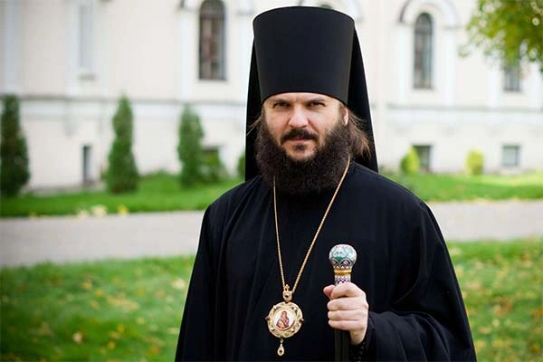

4 янв 2025
Вышла замуж не по любви, еперь его деньги закончились, жить сложно. Что делать?

Ответ
монаха Степана
монаха Степана
Добрый день! Думаю, Вы с самого начала поместили себя в крайне сложную ситуацию — брак с мужчиной, с которым на самом деле не хотели быть. Так бывает, это далеко не первый брак, заключенный не по любви, не из желания быть с конкретным человеком, а по причине множества различных «чтобы» или «потому что»: потому что пора, потому что вариант кажется перспективным, чтобы куда-то переехать, уйти из отчего дома, да мало ли...
Эти вещи, как показывает и Ваш пример, способны стать основой для брака:
И, конечно, в свете любви все эти «чтобы» и «потому что» оказываются вовсе не так важны и существенны: все эти блага, которые дает статус брака — это очень мало по сравнению с настоящим чувством любви и со взаимным желанием разделить одну жизнь на двоих по-настоящему.
Но это все важно понимать на момент вступления в брак. Вы совершенно правы в том, что у Вас есть ответственность и что даже ради любви уход от мужа — это разрыв брака, трагедия, грех и этого делать не стоит. Подпись под цитатой.
Вашей семье новые грани, новые измерения. И с близостью тоже станет все иначе, потому что близость связана прежде всего с отношениями.
Я думаю, что и в монастырь тоже не стоит Вам: монашество — это как любовь, туда нужно идти только если хочется именно жизни монашеской, молитвы, уединения, а не чтобы сбежать от нелюбимого мужа. Поэтому я бы Вам предложил поговорить с духовником, исповедоваться, усилить молитву, участие в Таинствах и подумать, может быть, с хорошим православным психологом, о том, как сделать жизнь с мужем более полной чего-то общего. Мне крайне сложно представить, как можно прожить 23 года и не найти никаких точек соприкосновения. Бывают же совместные выходные, отпуска, вечера? Какой-то досуг, обсуждения, спорт, что-то найти можно. И, может быть, как раз и получится с мужем, отцом общих детей (дети общие, не только Ваши!) найти то совместное пространство, которое даст Вам тепло, радость, именно человеческую близость, которой недоставало все эти годы. В любви она дается просто так, как подарок, но в ситуации, когда столько прожито и пройдено вместе, можно попробовать сделать ее, если Вы и супруг развернетесь навстречу друг другу. Это труд, работа, за этим нужно следить — но это даст Вашей семье новые грани, новые измерения.